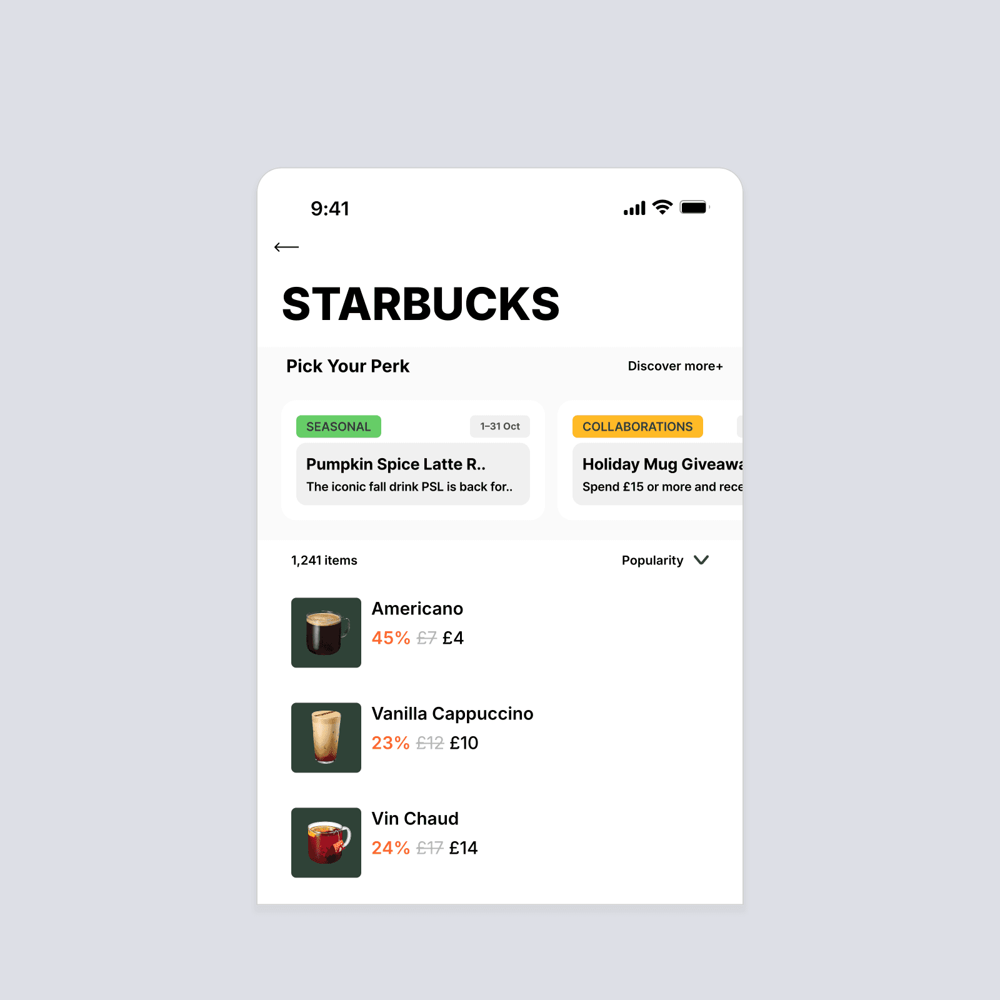

Yubin Park · 프로덕트 디자이너
사용자의 선택을 돕는 제품을 설계해.
선택한 작업01—03

Overview All stores ▾
A clearer view
of the operation.
Total sales매출 현황
Orders주문 현황
Stores매장 현황
Service activityOverview → Detail
Illustrative structure · no live or historical valuesStore details매장별 주문 · 매출 →Role-based access
Lab / Independent ProjectsA little room
A little room
for what’s next.
문제를 바라보는 방법을
직접 만들고 시험하는 공간.